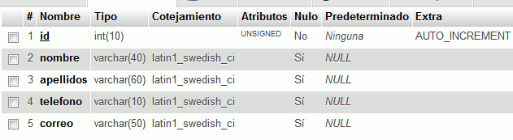
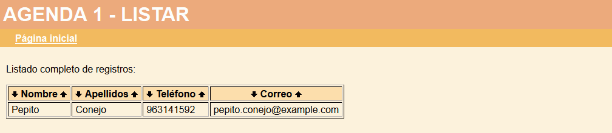
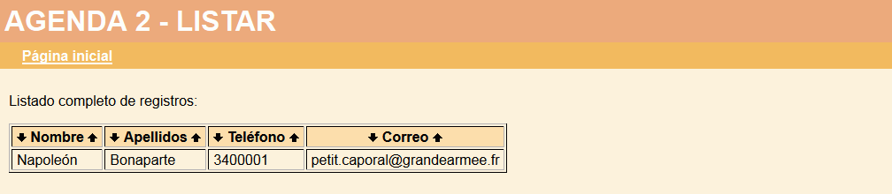

Descomprimir dos veces el archivo comprimido agenda_140212.zip, en las carpetas agenda_1 y agenda_2. Cada aplicación se abrirá en el navegador con la dirección agenda_1/index.php y agenda_2/index.php.
2. Crear una base de datos y dos tablas
Entrar en phpMyAdmin como usuario root y crear un usuario de MySQL con nombre iwb_agenda, contraseña iwb_agenda y base de datos iwb_agenda.
Entrar en phpMyAdmin como usuario iwb_agenda y crear en la base de datos iwb_agenda la tabla tabla_1 con los siguientes campos:
id INTEGER UNSIGNED NOT NULL AUTO_INCREMENT
nombre VARCHAR(40)
apellidos VARCHAR(60)
telefono VARCHAR(10)
correo VARCHAR(50)
PRIMARY KEY(id)
Hacer una captura de toda la pantalla donde se vea la estructura de la tabla:

Con phpMyAdmin hacer una copia de la tabla_1 que se llame tabla_2.
Hacer una captura de toda la pantalla donde se vea cómo se ha hecho la copia.
3. Utilizar la aplicación Agenda 1
Configurar la aplicación agenda_1 para que esta utilice la primera tabla creada en el ejercicio anterior.
Abrir la aplicación Agenda 1
Crear un registro como el de la captura siguiente:

Hacer una captura de toda la pantalla del listado de registros.
4. Utilizar la aplicación Agenda 2
Configurar la aplicación agenda_2 para que esta utilice la segunda tabla creada en el ejercicio anterior.
Abrir la aplicación Agenda 2
Crear un registro como el de la captura siguiente:

Hacer una captura de toda la pantalla del listado de registros.
5. Crear una copia de seguridad
Entrar en phpMyAdmin como usuario iwb_agenda, elegir la base de datos iwb_agenda y exportar las tablas con el método rápido al fichero iwb_agenda.sql.